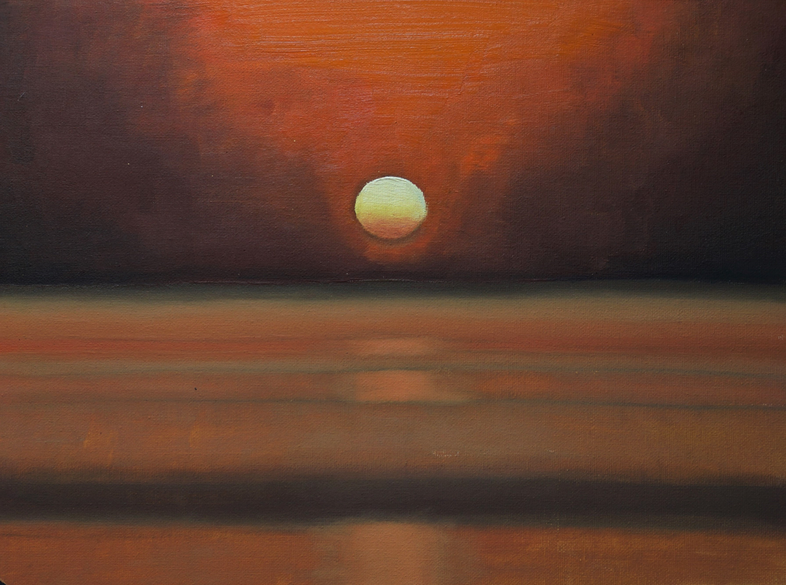
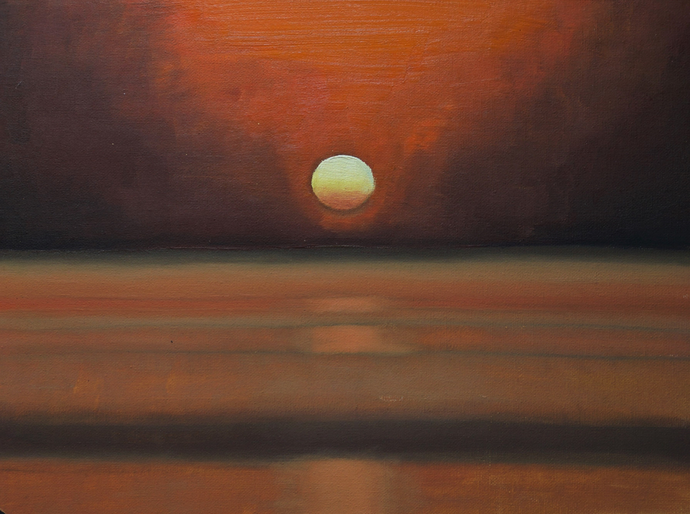
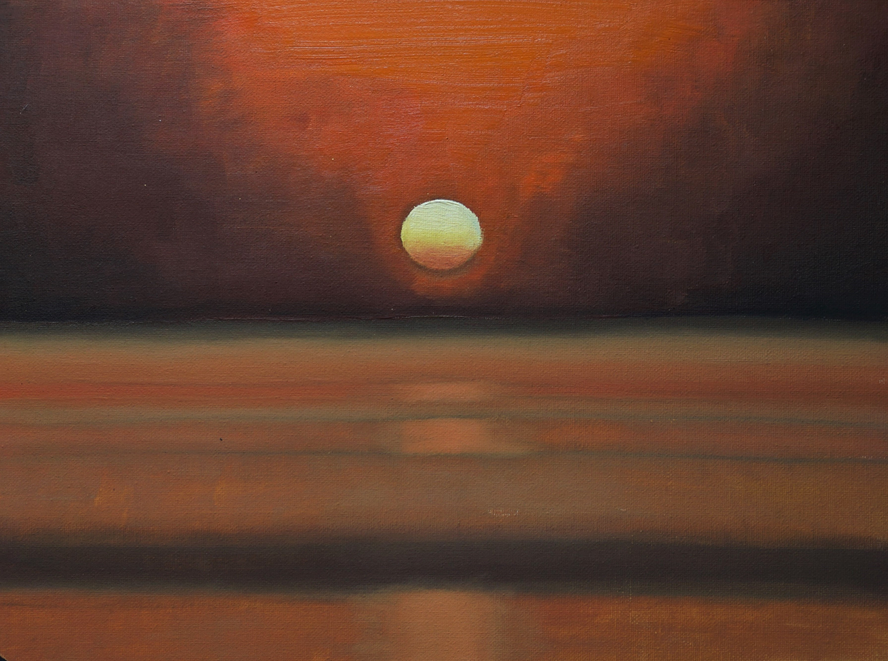

Галерея
Обо мне
Восход или закат?

21.07.21 Холст на картоне 30х40, масло
Создавая данную работу, мне захотелось отойти от пастозной живописи. Хотелось
научиться делать плавные переходы красок, создать цельный пейзаж без
агрессивной ряби мазков, спокойный и даже статичный. Солнце изображено чуть
сплюснутым на горизонте из-за искривления лучей в атмосферном воздухе. На
холсте оно выглядит так, как видел бы его наблюдатель в жизни. Дорожка света на
поверхности воды. Штиль и умиротворение.
Моменты заката обычно погружают меня в раздумья. В итоге, замечтавшись, я
пропускаю мгновение, когда солнце уходит за горизонт. Теперь я не упущу этот
момент.
 

 21.07.21 Холст на картоне 30х40, масло
Создавая данную работу, мне захотелось отойти от пастозной живописи. Хотелось
21.07.21 Холст на картоне 30х40, масло
Создавая данную работу, мне захотелось отойти от пастозной живописи. Хотелось